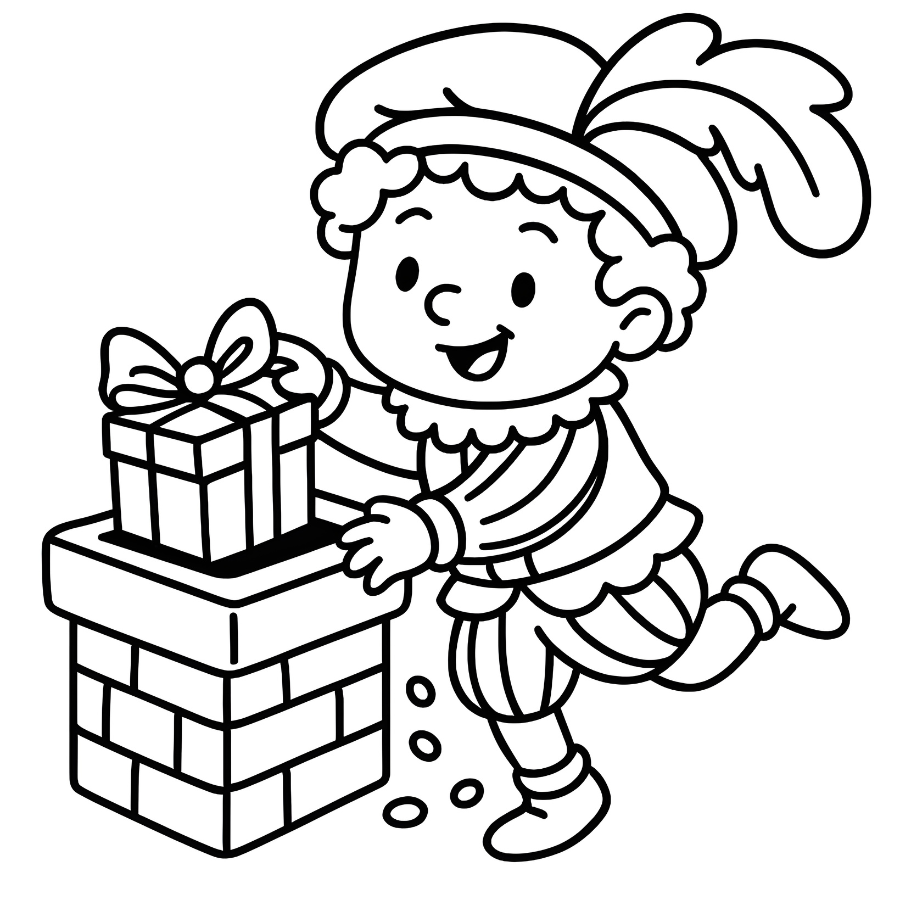
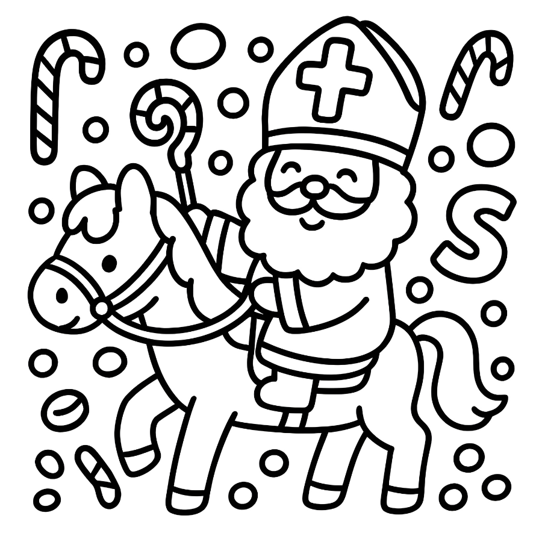
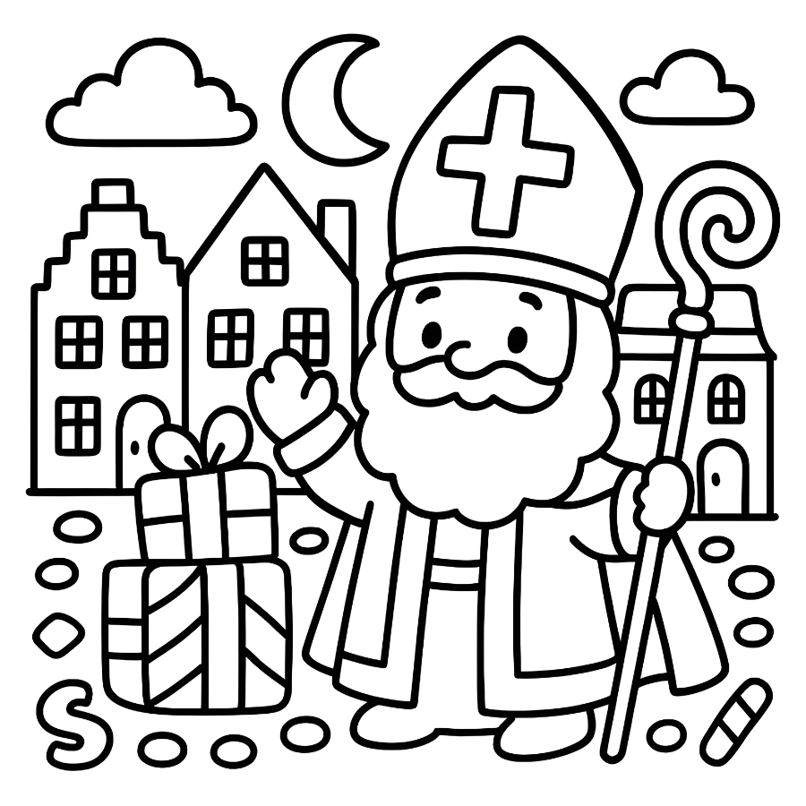

Voorbeelden uit het boeken




Welkom bij onze collectie Sinterklaas kleurboeken! We bieden kleurboeken voor alle leeftijden, van peuters tot oudere kinderen. Elk boek is zorgvuldig samengesteld met traditionele Sinterklaas-illustraties die perfect zijn voor het seizoen.
Al onze kleurboeken zijn verkrijgbaar via Amazon en kunnen direct worden besteld en thuisbezorgd.